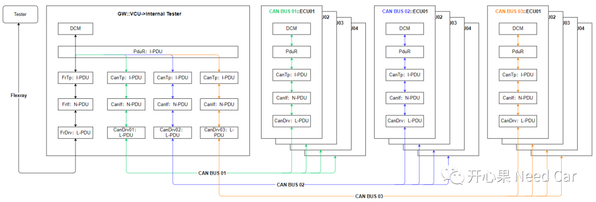
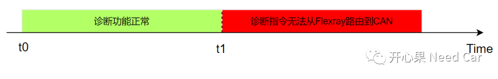
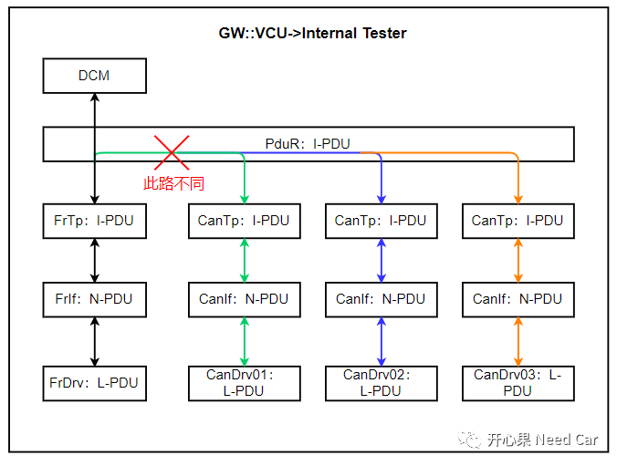
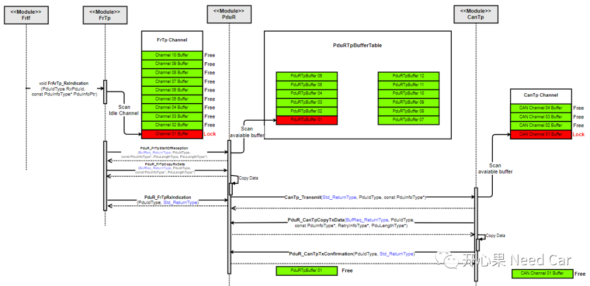
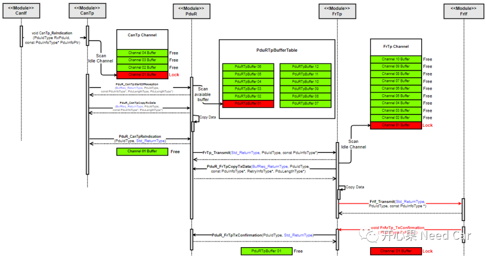
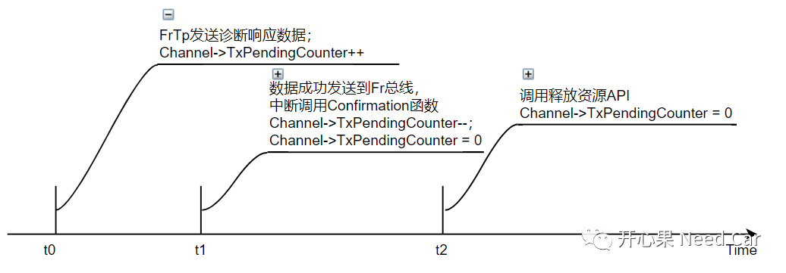
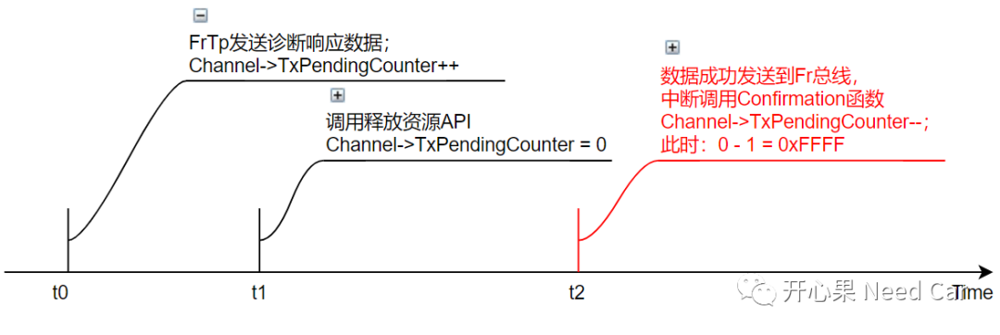

作为开发人员，你不知道下一个bug会是什么样的问题。不管遇到什么样的问题，别急，也别怕！一般，我会分三步走：
- 明确问题现象，清楚问题出现时，测试人员所做的操作和工况。记住，这里不要过分相信问题上报人员的“口述”，好好分析log；
- 根据问题出现时的数据log，复盘问题。尽可能地把问题模拟一遍，我常用的做法：画图，"编一个故事"（假设问题的原因）；
- 根据假设模拟问题，如果现象和假设对的上，说明问题描述的合理，进而得出问题的根本原因。
最重要的一点：提出的假设先说服自己，说服不了自己，多半也说服不了别人。
本文，给大家再“假设”一下，复盘“诊断指令不路由”的问题。
排查问题之前，需要清楚当前节点的网络拓扑关系，如下所示：

VCU包含一路Flexray和3路CAN，每一路CAN可以接收4个节点的诊断响应报文。注意：每一路CAN BUS上不只有4个节点，而是VCU只接收4个节点的诊断响应。
t0时刻，Tester开始给VCU发送诊断指令，诊断指令需要从Flexray路由到对应的CAN BUS，之后诊断指令被目标CAN节点接收；
t1时刻，诊断指令无法在对应的CAN BUS中发送出来，即：VCU只能接收从Tester发送来的指令，而不能路由到对应的CAN BUS上。
上述描述如下所示：

从模块的角度分析，就是PduR的路由通路被阻塞，不可用，如下所示：

诊断请求指令从FrTp到CanTp的时序如下所示：

- 上位机发送诊断指令，经由Flexray驱动送给FrIf模块，FrIf通过识别RxPduId 知道数据需要送给FrTp，FrIf通过FrArTp_RxIndication()接口将数据信息送给FrTp；
- FrTp拿到FrIf传递的诊断数据信息，首先扫描FrTp层中已经使用的Channel中，是否同一RxPduId已经在处理，如果同一RxPduId已经在处理，则丢弃该诊断请求；如果该RxPduId没有处理，则查找FrTp是否有空闲的Channel可用，如果有可用的Channel，则调用PduR_FrTpStartOfReception()接口通知PduR有数据到来；
- PduR通过PduR_FrTpStartOfReception()接口传递的PduLength参数，动态查找是否有可用的缓存区。如果没有可用的PduRTpBuffer，则告知FrTp当前诊断命令无法处理，实际工程，这种情况不会发生，工程中会预估出可接收的最大诊断指令长度，留出足够的Buffer空间；如果有可用的PduRTpBuffer，则告知FrTp，可以将数据传递过来，之后FrTp通过PduR_FrTpCopyRxData()接口将诊断指令Copy到可用的PduRTpBuffer。FrTp将数据全部Copy完成以后，通过PduR_FrTpRxIndication()接口告知PduR，数据传输完成，同时释放FrTp的Channel。
- PduR收到数据以后（由于总线类型不同，两者有效负载长度不同，需要PduR先缓存接收的数据，再发送到目标总线），按照既定的路由路径，调用CanTp的CanTp_Transmit()接口将数据发送到目标CAN BUS。
VCU将数据成功发送到CAN BUS以后，产生一个发送中断（也可以用Polling方式），中断例程调用上层注册的XX_TxConfirmation()，告知上层数据发送成功与否，如果数据成功发送到总线，则CanTp及PduR释放各自的资源。
诊断响应指令从CanTp到FrTp的时序如下所示：

- 目标CAN节点响应诊断指令，经由VCU的CAN驱动送给CanIf模块，CanIf通过识别RxPduId 知道数据需要送给CanTp，CanIf通过CanTp_RxIndication()接口将数据信息送给CanTp；
- CanTp拿到CanIf传递的诊断数据信息，首先扫描CanTp层中已经使用的Channel中，是否同一RxPduId已经在处理，如果同一RxPduId已经在处理，则丢弃该诊断请求；如果该RxPduId没有处理，则查找CanTp是否有空闲的Channel可用，如果有可用的Channel，则调用PduR_CanTpStartOfReception()接口通知PduR有数据到来；
- PduR通过PduR_CanTpStartOfReception()接口传递的PduLength参数，动态查找是否有可用的缓存区。如果没有可用的PduRTpBuffer，则告知CanTp当前诊断命令无法处理；如果有可用的PduRTpBuffer，则告知CanTp，可以将数据传递过来，之后CanTp通过PduR_CanTpCopyRxData()接口将诊断指令Copy到可用的PduRTpBuffer。CanTp将数据全部Copy完成以后，通过PduR_CanTpRxIndication()接口告知PduR，数据传输完成。
- PduR收到数据以后，按照既定的路由路径，调用FrTp的FrTp_Transmit()接口，将诊断响应数据发送到目标Flexray BUS。
- VCU将数据成功发送到Flexray BUS以后，产生一个发送中断（也可以用Polling方式），中断例程调用上层注册的XX_TxConfirmation()，告知上层数据发送成功与否，如果数据成功发送到总线，则FrTp及PduR释放各自的资源。
本文提到的问题出现在第5步中。问题代码中，有如下操作：延时一个Cycle发送诊断响应数据，同时将FrTp的状态做了切换，由Started切换到Finished；
FrTp的每个Channel有一个参数(uint16)Channel->TxPendingCounter，该参数每次发送之前会进行++动作；如果As时间超时，发送Confirmation，Channel->TxPendingCounter--；如果通道资源释放接口调用Channel->TxPendingCounter == 0。
因为发送Confirmation行为由中断触发，其触发的时机由诊断响应数据成功发送到总线上的时机决定，因此Channel->TxPendingCounter的值存在两种情况：发送Confirmation行为在调用释放资源(Channel)之前执行，则Channel->TxPendingCounter = 0，Channel不会被Lock，如下所示：
发送Confirmation行为在调用释放资源(Channel)之后执行，则Channel->TxPendingCounter = 0xFFFF，使得Channel被Lock，之后相同的RxPduId再次请求诊断指令时，由于Channel->TxPendingCounter＞ 0而不能使用，该如下所示：
同样，其他FrTp Channel逐个被锁死，导致诊断指令无法路由。
Confirmation程序判断Channel->TxPendingCounter时，如果Channel->TxPendingCounter = 0，则无需进行Channel->TxPendingCounter--操作。
再次提醒：不到万不得已，不要轻易修改静态代码！